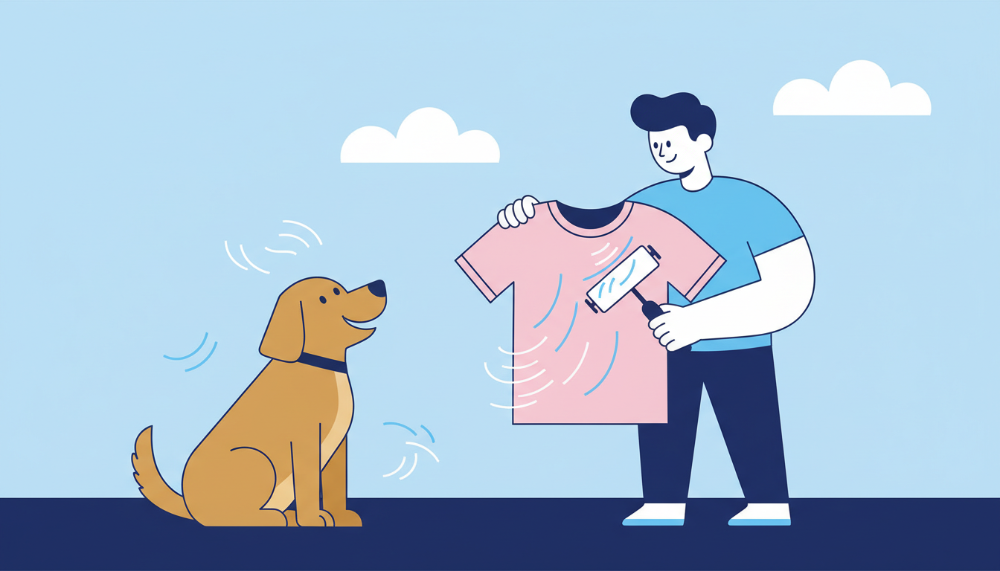

If you share your home with a dog or cat, you already know the drill. You put on a clean black top, sit on the couch for thirty seconds, and stand up looking like you've been rolling around with a golden retriever. Pet hair gets into everything — clothes, bedding, towels, and even items that never go near your pet.
The good news is that with the right approach, you can get your laundry genuinely fur-free. Here's how to tackle pet hair before, during, and after washing.
Before You Wash: Pre-Treat for Best Results
Give Everything a Good Shake
Before anything goes into the machine, take each item outside and give it a firm shake. This dislodges the loose surface hair that would otherwise clump up in the wash and redistribute itself across your entire load. It takes an extra minute, but it makes a noticeable difference to the final result.
Use a Lint Roller
A quick once-over with a lint roller on heavily furred items — especially dark clothing and knits — removes a surprising amount of hair before it ever touches water. Keep a roller near your laundry basket and make it part of your sorting routine. It doesn't need to be perfect; you're just removing the worst of it.
Try the No-Heat Dryer Trick
This one surprises a lot of people, but it works brilliantly. Toss your furry clothes into the dryer on a no-heat or air-only cycle for about ten minutes before washing. The tumbling action loosens embedded pet hair, and the lint trap catches it. When you pull your clothes out, you'll find they're already significantly less furry — and the wash cycle becomes much more effective as a result.
During the Wash: Let the Machine Help
Add a Dryer Sheet to the Wash
Tossing a dryer sheet into the washing machine with your load might sound unusual, but it helps reduce static cling, which is one of the main reasons pet hair sticks to fabric in the first place. With less static, the hair releases more easily and gets flushed out with the rinse water. Use an unscented sheet if you're sensitive to fragrances.
Don't Overload the Machine
Pet hair needs water flow to wash away. If you cram too many items into the drum, the water can't circulate properly and the hair just redistributes from one garment to another. Leave enough room for everything to move freely — you'll get a much cleaner result.
Clean the Lint Trap Before Drying
This sounds obvious, but it's worth emphasising. If the lint trap is already full from a previous load, it can't catch the pet hair from yours. Always check and clean the lint trap before you start a dryer cycle. A clean trap means better airflow, faster drying, and more effective hair removal.
After the Wash: The Final Touch-Up
Run Another Dryer Cycle if Needed
If your clothes come out of the dryer and there's still some stubborn hair clinging on, run them through for another ten minutes. Some fabrics — fleece, jersey knit, and microfibre in particular — are magnets for pet hair and may need a second pass. Again, check and clean the lint trap between cycles.
Finish with a Lint Roller
For anything that's going straight into a wardrobe or drawer, a final lint-roller pass gets the last traces. This is especially worthwhile for work clothes, dark garments, and anything you'd rather not show up to a meeting in covered in fur.
What About Pet Bedding and Blankets?
Your pet's bed, blankets, and favourite couch throws are where the bulk of the hair accumulates. These items benefit from a commercial washing machine because they're bulky and heavily loaded with fur. A home machine can struggle to flush all that hair out, and it often clogs the drain filter.
A large commercial washer — like the 27KG machines at Laundry Day — gives pet bedding the space and water volume it needs for a thorough clean. The high-capacity dryers are equally effective at pulling hair off thick fabrics. Bring your pet's bedding in for a monthly wash and you'll notice a real difference in how much loose fur ends up on your own clothes at home.
Prevention: Reduce the Problem at the Source
You'll never eliminate pet hair entirely (it's part of the deal when you have a furry companion), but you can reduce how much ends up on your clothes. Cover furniture with washable throws that are easy to chuck in the machine weekly. And brush your pet regularly, especially during shedding season — a five-minute brush every couple of days makes a huge difference to how much hair ends up floating around your home.
At Laundry Day, we see plenty of pet owners who bring in everything from dog beds to fur-covered blankets. Our machines handle it all with ease, and with free detergent and zero card fees at every location — Brunswick East, St Albans, and Maribyrnong — keeping your pet's laundry fresh doesn't have to cost a fortune. Your clothes (and your couch) will thank you.
Got a Mountain of Pet Laundry?
Our 27KG washers handle pet beds, blankets, and fur-covered loads with ease. Free detergent, zero card fees.
Find Your Nearest Location